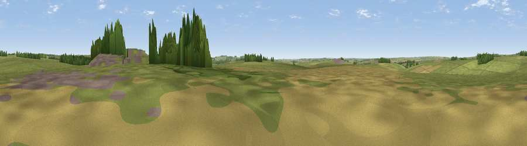

Viewpoint near Haxton
#38703 in England · top 82% of its area beats it · near HaxtonThe view, rendered

A 360° render of this exact spot computed from the terrain model, tree cover and land cover — summer colours, afternoon light, calibrated against photographs of famous viewpoints. Real trees, hedges and buildings will differ in detail.
The panorama
Grey silhouette: terrain skyline in each direction (720 bearings, Earth curvature and refraction included). Dashed green: skyline with trees (+15 m) and buildings (+8 m) as obstacles. Blue strip: how far the ground is visible on each bearing.
Where the view opens
Wedge length = distance to the farthest visible ground on that bearing (vegetation-aware). Rings at 10, 25 and 50 km.
What fills the view
78% grassland · 15% cropland · 6% woodland · 1% built-up
Angular shares of the visible panorama (visual magnitude), not map area. Landscape diversity 0.31 (0–1 Shannon).
Key numbers
More beautiful places nearby
The staircase of upgrades: each row has a higher view potential than everything closer. Driving times are estimates from straight-line distance, calibrated against real road routing — check an actual route before setting out.
| Place | Direction | Drive | Score |
|---|---|---|---|
| Silk Hill | S · 4 km | ~8 min | 42.1 |
| Viewpoint near Tidworth | E · 4 km | ~9 min | 61.0 |
| Viewpoint near Cholderton | SSE · 7 km | ~15 min | 61.6 |
| Viewpoint near Bulford | SSE · 8 km | ~16 min | 70.3 |
| Viewpoint near Oare | N · 13 km | ~24 min | 72.9 |
| Martinsell viewpoint | N · 13 km | ~24 min | 77.3 |
| Viewpoint near Berwick St John | SW · 39 km | ~58 min | 78.2 |
| Viewpoint near Buriton | ESE · 62 km | ~84 min | 80.0 |
51.25325, -1.74514 · source: osm peak · position refined by local search. Computed location — check access rights before visiting.